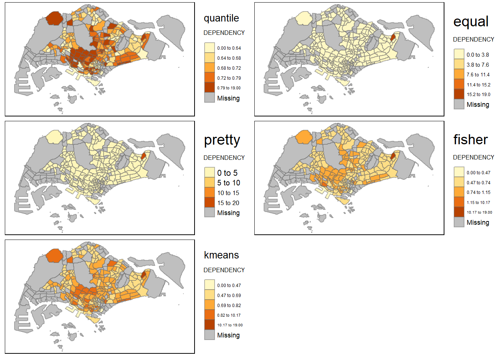
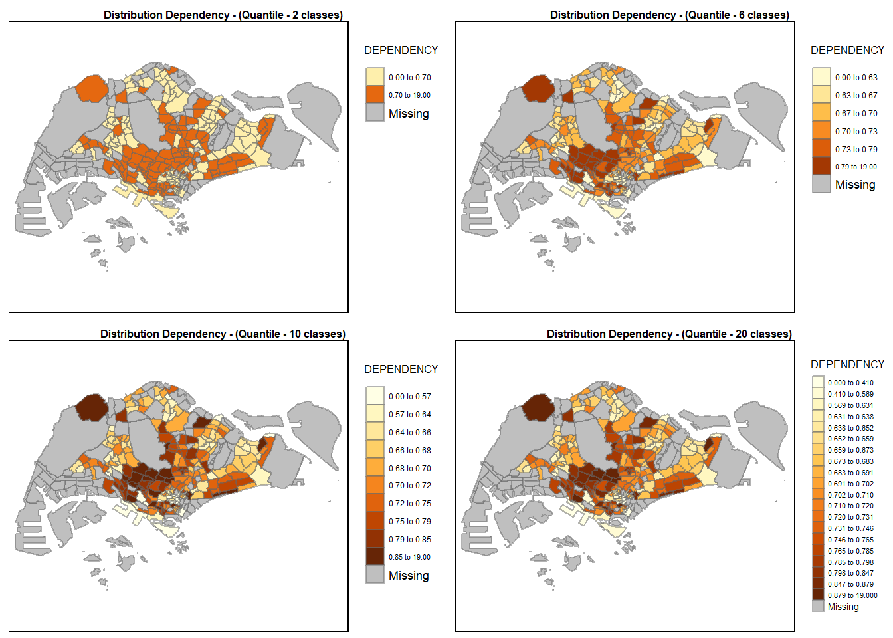
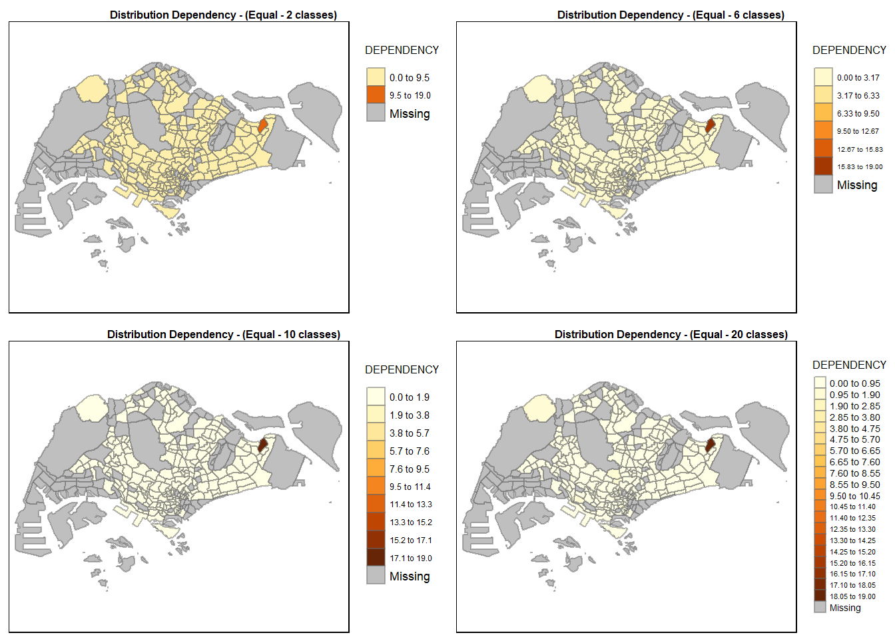
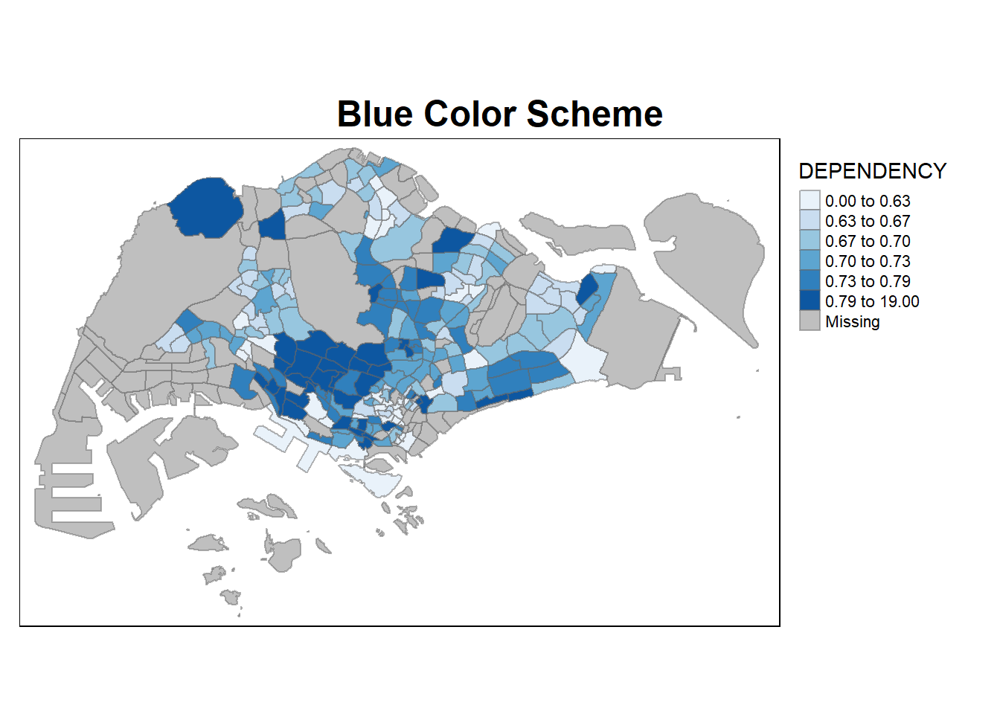
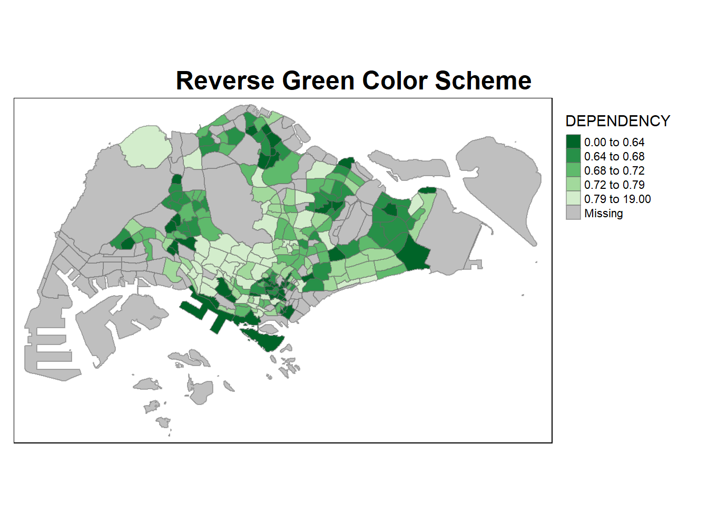
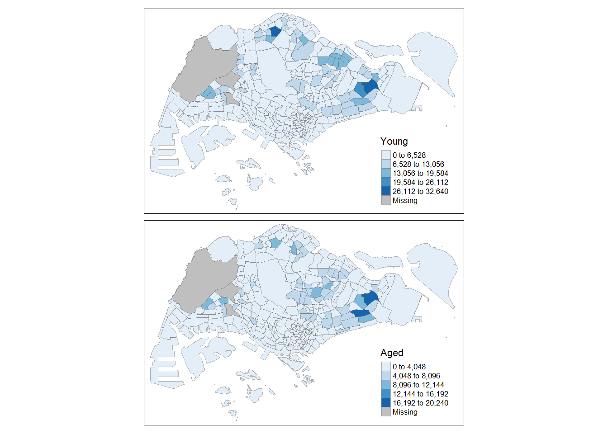
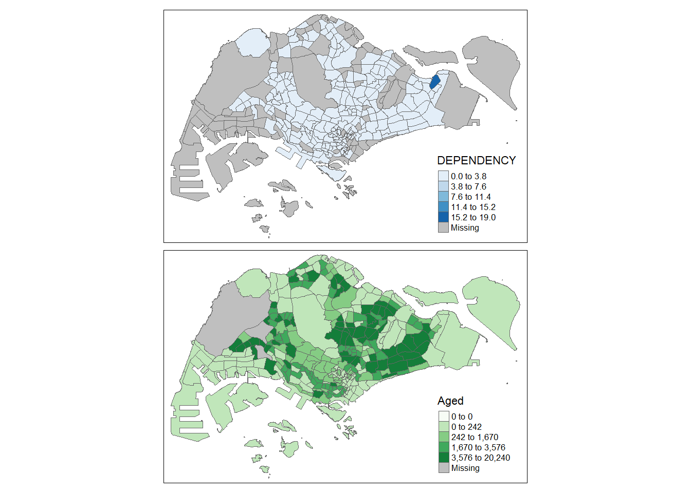
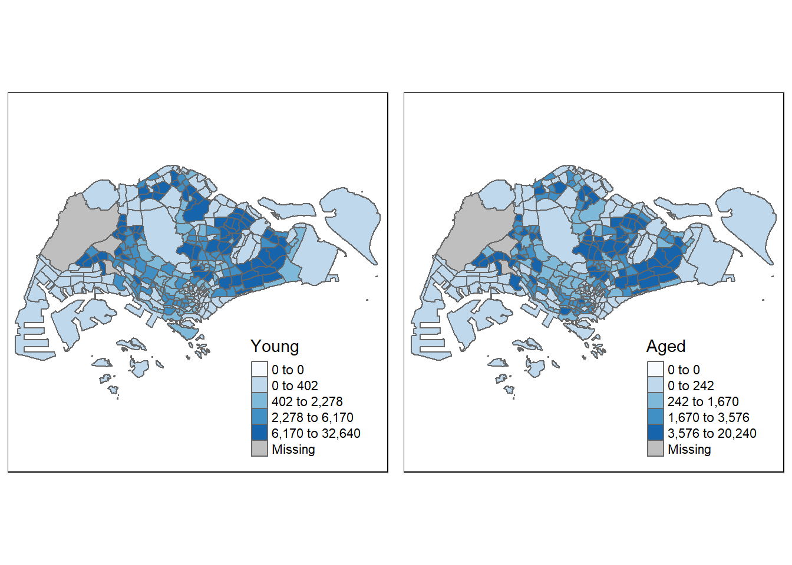
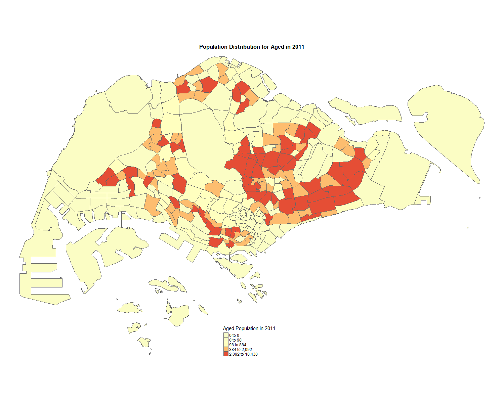
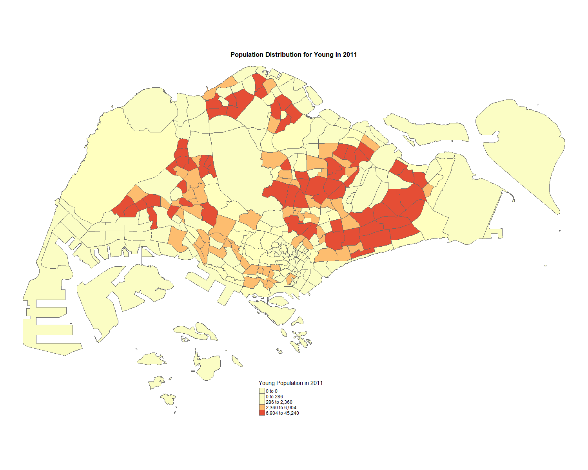

pacman::p_load(sf, tmap, tidyverse, dplyr, gridExtra, grid)Thematic Mapping and GeoVisualisation with R
Using TMap, we will learn how to plot functional and truthful choropleth maps. Through Geo visualization, we allow our audiences to understand the dataset easier with their spatial cognition.
1.0 Setting up the Environment
Likewise in Chapter 1, we set up the environment by installing all the required packages. We can do so using the p_load function from the Pacman Package.
A total of 5 packages will be used:
- readr for importing delimited text files,
- tidyr for tidying data,
- dplyr for wrangling data and
- sf for handling geospatial data.
- tmap for creating geovisualizations.
2.0 Importing the Data into R
Two Data Set will be used here, we can retrieve it by simply clicking on the link.
Singapore Population Size. This is an aspatial dataset that does not contain coordinate values. However, it includes “PA” (Planning Area) and “SZ” (Subzone) fields that can be linked to another dataset to identify the geographical areas.
Singapore Map, This dataset is used to create the base layer of the choropleth map. It contains the geographical boundaries of Singapore at the planning subzone level and is stored as an ESRI shapefile.
2.1 Importing the Geo-spatial Data
Simply use the st_read() function to import the shapefile into R.
mpsz <- st_read(dsn = "data/geospatial",
layer = "MP14_SUBZONE_WEB_PL")Reading layer `MP14_SUBZONE_WEB_PL' from data source
`C:\Users\jiale\Desktop\IS415\IS415-GAA\Hands_On_Exercises\Hands_On_Exercise_2\data\geospatial'
using driver `ESRI Shapefile'
Simple feature collection with 323 features and 15 fields
Geometry type: MULTIPOLYGON
Dimension: XY
Bounding box: xmin: 2667.538 ymin: 15748.72 xmax: 56396.44 ymax: 50256.33
Projected CRS: SVY212.1.1 Understanding the data
We can easily examine the content of mpsz by calling the variable:
mpszSimple feature collection with 323 features and 15 fields
Geometry type: MULTIPOLYGON
Dimension: XY
Bounding box: xmin: 2667.538 ymin: 15748.72 xmax: 56396.44 ymax: 50256.33
Projected CRS: SVY21
First 10 features:
OBJECTID SUBZONE_NO SUBZONE_N SUBZONE_C CA_IND PLN_AREA_N
1 1 1 MARINA SOUTH MSSZ01 Y MARINA SOUTH
2 2 1 PEARL'S HILL OTSZ01 Y OUTRAM
3 3 3 BOAT QUAY SRSZ03 Y SINGAPORE RIVER
4 4 8 HENDERSON HILL BMSZ08 N BUKIT MERAH
5 5 3 REDHILL BMSZ03 N BUKIT MERAH
6 6 7 ALEXANDRA HILL BMSZ07 N BUKIT MERAH
7 7 9 BUKIT HO SWEE BMSZ09 N BUKIT MERAH
8 8 2 CLARKE QUAY SRSZ02 Y SINGAPORE RIVER
9 9 13 PASIR PANJANG 1 QTSZ13 N QUEENSTOWN
10 10 7 QUEENSWAY QTSZ07 N QUEENSTOWN
PLN_AREA_C REGION_N REGION_C INC_CRC FMEL_UPD_D X_ADDR
1 MS CENTRAL REGION CR 5ED7EB253F99252E 2014-12-05 31595.84
2 OT CENTRAL REGION CR 8C7149B9EB32EEFC 2014-12-05 28679.06
3 SR CENTRAL REGION CR C35FEFF02B13E0E5 2014-12-05 29654.96
4 BM CENTRAL REGION CR 3775D82C5DDBEFBD 2014-12-05 26782.83
5 BM CENTRAL REGION CR 85D9ABEF0A40678F 2014-12-05 26201.96
6 BM CENTRAL REGION CR 9D286521EF5E3B59 2014-12-05 25358.82
7 BM CENTRAL REGION CR 7839A8577144EFE2 2014-12-05 27680.06
8 SR CENTRAL REGION CR 48661DC0FBA09F7A 2014-12-05 29253.21
9 QT CENTRAL REGION CR 1F721290C421BFAB 2014-12-05 22077.34
10 QT CENTRAL REGION CR 3580D2AFFBEE914C 2014-12-05 24168.31
Y_ADDR SHAPE_Leng SHAPE_Area geometry
1 29220.19 5267.381 1630379.3 MULTIPOLYGON (((31495.56 30...
2 29782.05 3506.107 559816.2 MULTIPOLYGON (((29092.28 30...
3 29974.66 1740.926 160807.5 MULTIPOLYGON (((29932.33 29...
4 29933.77 3313.625 595428.9 MULTIPOLYGON (((27131.28 30...
5 30005.70 2825.594 387429.4 MULTIPOLYGON (((26451.03 30...
6 29991.38 4428.913 1030378.8 MULTIPOLYGON (((25899.7 297...
7 30230.86 3275.312 551732.0 MULTIPOLYGON (((27746.95 30...
8 30222.86 2208.619 290184.7 MULTIPOLYGON (((29351.26 29...
9 29893.78 6571.323 1084792.3 MULTIPOLYGON (((20996.49 30...
10 30104.18 3454.239 631644.3 MULTIPOLYGON (((24472.11 29...Question -> Notice that only the first ten records will be displayed. Do you know why?
Only 10 records are shown because displaying a subset of rows makes it easier to inspect the data without loading the entire dataset. This optimization helps improve processing time for large datasets. Often, these first 10 records provide users with a quick preview of the dataset.
Remember, we can always explore the content of mpsz using the following functions. If we want to preview more than 10 records, we can simply use head(mpsz, 20) to view more rows.
st_geometry: Prints basic information about the feature class, such as the type of geometry.glimpse: Displays associated attribute information in the data frame.head: Reveals complete information of a feature object.
st_geometry(mpsz)Geometry set for 323 features
Geometry type: MULTIPOLYGON
Dimension: XY
Bounding box: xmin: 2667.538 ymin: 15748.72 xmax: 56396.44 ymax: 50256.33
Projected CRS: SVY21
First 5 geometries:MULTIPOLYGON (((31495.56 30140.01, 31980.96 296...MULTIPOLYGON (((29092.28 30021.89, 29119.64 300...MULTIPOLYGON (((29932.33 29879.12, 29947.32 298...MULTIPOLYGON (((27131.28 30059.73, 27088.33 297...MULTIPOLYGON (((26451.03 30396.46, 26440.47 303...glimpse(mpsz)Rows: 323
Columns: 16
$ OBJECTID <int> 1, 2, 3, 4, 5, 6, 7, 8, 9, 10, 11, 12, 13, 14, 15, 16, 17, …
$ SUBZONE_NO <int> 1, 1, 3, 8, 3, 7, 9, 2, 13, 7, 12, 6, 1, 5, 1, 1, 3, 2, 2, …
$ SUBZONE_N <chr> "MARINA SOUTH", "PEARL'S HILL", "BOAT QUAY", "HENDERSON HIL…
$ SUBZONE_C <chr> "MSSZ01", "OTSZ01", "SRSZ03", "BMSZ08", "BMSZ03", "BMSZ07",…
$ CA_IND <chr> "Y", "Y", "Y", "N", "N", "N", "N", "Y", "N", "N", "N", "N",…
$ PLN_AREA_N <chr> "MARINA SOUTH", "OUTRAM", "SINGAPORE RIVER", "BUKIT MERAH",…
$ PLN_AREA_C <chr> "MS", "OT", "SR", "BM", "BM", "BM", "BM", "SR", "QT", "QT",…
$ REGION_N <chr> "CENTRAL REGION", "CENTRAL REGION", "CENTRAL REGION", "CENT…
$ REGION_C <chr> "CR", "CR", "CR", "CR", "CR", "CR", "CR", "CR", "CR", "CR",…
$ INC_CRC <chr> "5ED7EB253F99252E", "8C7149B9EB32EEFC", "C35FEFF02B13E0E5",…
$ FMEL_UPD_D <date> 2014-12-05, 2014-12-05, 2014-12-05, 2014-12-05, 2014-12-05…
$ X_ADDR <dbl> 31595.84, 28679.06, 29654.96, 26782.83, 26201.96, 25358.82,…
$ Y_ADDR <dbl> 29220.19, 29782.05, 29974.66, 29933.77, 30005.70, 29991.38,…
$ SHAPE_Leng <dbl> 5267.381, 3506.107, 1740.926, 3313.625, 2825.594, 4428.913,…
$ SHAPE_Area <dbl> 1630379.27, 559816.25, 160807.50, 595428.89, 387429.44, 103…
$ geometry <MULTIPOLYGON [m]> MULTIPOLYGON (((31495.56 30..., MULTIPOLYGON (…head(mpsz, n = 20)Simple feature collection with 20 features and 15 fields
Geometry type: MULTIPOLYGON
Dimension: XY
Bounding box: xmin: 8012.578 ymin: 15748.72 xmax: 33316.59 ymax: 31081.67
Projected CRS: SVY21
First 10 features:
OBJECTID SUBZONE_NO SUBZONE_N SUBZONE_C CA_IND PLN_AREA_N
1 1 1 MARINA SOUTH MSSZ01 Y MARINA SOUTH
2 2 1 PEARL'S HILL OTSZ01 Y OUTRAM
3 3 3 BOAT QUAY SRSZ03 Y SINGAPORE RIVER
4 4 8 HENDERSON HILL BMSZ08 N BUKIT MERAH
5 5 3 REDHILL BMSZ03 N BUKIT MERAH
6 6 7 ALEXANDRA HILL BMSZ07 N BUKIT MERAH
7 7 9 BUKIT HO SWEE BMSZ09 N BUKIT MERAH
8 8 2 CLARKE QUAY SRSZ02 Y SINGAPORE RIVER
9 9 13 PASIR PANJANG 1 QTSZ13 N QUEENSTOWN
10 10 7 QUEENSWAY QTSZ07 N QUEENSTOWN
PLN_AREA_C REGION_N REGION_C INC_CRC FMEL_UPD_D X_ADDR
1 MS CENTRAL REGION CR 5ED7EB253F99252E 2014-12-05 31595.84
2 OT CENTRAL REGION CR 8C7149B9EB32EEFC 2014-12-05 28679.06
3 SR CENTRAL REGION CR C35FEFF02B13E0E5 2014-12-05 29654.96
4 BM CENTRAL REGION CR 3775D82C5DDBEFBD 2014-12-05 26782.83
5 BM CENTRAL REGION CR 85D9ABEF0A40678F 2014-12-05 26201.96
6 BM CENTRAL REGION CR 9D286521EF5E3B59 2014-12-05 25358.82
7 BM CENTRAL REGION CR 7839A8577144EFE2 2014-12-05 27680.06
8 SR CENTRAL REGION CR 48661DC0FBA09F7A 2014-12-05 29253.21
9 QT CENTRAL REGION CR 1F721290C421BFAB 2014-12-05 22077.34
10 QT CENTRAL REGION CR 3580D2AFFBEE914C 2014-12-05 24168.31
Y_ADDR SHAPE_Leng SHAPE_Area geometry
1 29220.19 5267.381 1630379.3 MULTIPOLYGON (((31495.56 30...
2 29782.05 3506.107 559816.2 MULTIPOLYGON (((29092.28 30...
3 29974.66 1740.926 160807.5 MULTIPOLYGON (((29932.33 29...
4 29933.77 3313.625 595428.9 MULTIPOLYGON (((27131.28 30...
5 30005.70 2825.594 387429.4 MULTIPOLYGON (((26451.03 30...
6 29991.38 4428.913 1030378.8 MULTIPOLYGON (((25899.7 297...
7 30230.86 3275.312 551732.0 MULTIPOLYGON (((27746.95 30...
8 30222.86 2208.619 290184.7 MULTIPOLYGON (((29351.26 29...
9 29893.78 6571.323 1084792.3 MULTIPOLYGON (((20996.49 30...
10 30104.18 3454.239 631644.3 MULTIPOLYGON (((24472.11 29...Through glimpse and head, we can map the following columns to their description for ease of use.
| Variable Name | Description | Cluster (Y/N) | Data Type / Example Values |
|---|---|---|---|
| OBJECTID | Unique identifier for each row in the dataset. | N | <int> 1, 2, 3, 4, 5, 6, 7, 8, 9, 10, … |
| SUBZONE_NO | Numeric code representing the specific subzone within the planning area. | Y | <int> 1, 1, 3, 8, 3, 7, 9, 2, 13, 7, … |
| SUBZONE_N | The name of the subzone (e.g., “MARINA SOUTH,” “PEARL’S HILL”). | Y | <chr> “MARINA SOUTH”, “PEARL’S HILL”, “BOAT QUAY”, … |
| SUBZONE_C | Short code representing the subzone, typically an abbreviation. | Y | <chr> “MSSZ01”, “OTSZ01”, “SRSZ03”, “BMSZ08”, … |
| CA_IND | Indicates if the subzone is a Central Area subzone (“Y” for Yes, “N” for No). | Y | <chr> “Y”, “Y”, “Y”, “N”, “N”, “N”, “N”, … |
| PLN_AREA_N | The name of the planning area that the subzone belongs to (e.g., “OUTRAM”). | Y | <chr> “MARINA SOUTH”, “OUTRAM”, “SINGAPORE RIVER”, … |
| PLN_AREA_C | Short code representing the planning area (abbreviation). | Y | <chr> “MS”, “OT”, “SR”, “BM”, “BM”, “BM”, … |
| REGION_N | The name of the broader region (e.g., “CENTRAL REGION,” “WEST REGION”). | Y | <chr> “CENTRAL REGION”, “CENTRAL REGION”, “CENTRAL REGION”, … |
| REGION_C | Short code representing the region (e.g., “CR” for Central Region). | Y | <chr> “CR”, “CR”, “CR”, “CR”, “CR”, “CR”, … |
| INC_CRC | Internal checksum code for data integrity; not relevant for clustering. | N | <chr> “5ED7EB253F99252E”, “8C7149B9EB32EEFC”, “C35FEFF02B13E0E5”, … |
| FMEL_UPD_D | Date when the data was last updated (e.g., “2014-12-05”). | N | <date> 2014-12-05, 2014-12-05, 2014-12-05, … |
| X_ADDR | X coordinate of the subzone’s centroid or key location. | Y | <dbl> 31595.84, 28679.06, 29654.96, … |
| Y_ADDR | Y coordinate of the subzone’s centroid or key location. | Y | <dbl> 29220.19, 29782.05, 29974.66, … |
| SHAPE_Leng | The length of the subzone boundary (in meters). | Y | <dbl> 5267.381, 3506.107, 1740.926, … |
| SHAPE_Area | The area of the subzone (in square meters). | Y | <dbl> 1630379.27, 559816.25, 160807.50, … |
| geometry | Geographic shape data (MULTIPOLYGON) representing the subzone’s boundaries. | Y | <MULTIPOLYGON [m]> MULTIPOLYGON (((31495.56 30…, MULTIPOLYGON (((29092.28 30…, … |
2.2 Importing Attribute Data - Singapore Population Data
We can simply use the read_csv function from the readr package:
popdata <- read_csv("data/respopagesextod2011to2020.csv")Rows: 984656 Columns: 7
── Column specification ────────────────────────────────────────────────────────
Delimiter: ","
chr (5): PA, SZ, AG, Sex, TOD
dbl (2): Pop, Time
ℹ Use `spec()` to retrieve the full column specification for this data.
ℹ Specify the column types or set `show_col_types = FALSE` to quiet this message.2.2.1 Understanding the data
We can perform the same exploration to understand this data set, or simply refer to the data source website here. For a quick analysis, use head() and glimpse():
head(popdata, n = 20)# A tibble: 20 × 7
PA SZ AG Sex TOD Pop Time
<chr> <chr> <chr> <chr> <chr> <dbl> <dbl>
1 Ang Mo Kio Ang Mo Kio Town Centre 0_to_4 Males HDB 1- and 2-Ro… 0 2011
2 Ang Mo Kio Ang Mo Kio Town Centre 0_to_4 Males HDB 3-Room Flats 10 2011
3 Ang Mo Kio Ang Mo Kio Town Centre 0_to_4 Males HDB 4-Room Flats 30 2011
4 Ang Mo Kio Ang Mo Kio Town Centre 0_to_4 Males HDB 5-Room and … 50 2011
5 Ang Mo Kio Ang Mo Kio Town Centre 0_to_4 Males HUDC Flats (exc… 0 2011
6 Ang Mo Kio Ang Mo Kio Town Centre 0_to_4 Males Landed Properti… 0 2011
7 Ang Mo Kio Ang Mo Kio Town Centre 0_to_4 Males Condominiums an… 40 2011
8 Ang Mo Kio Ang Mo Kio Town Centre 0_to_4 Males Others 0 2011
9 Ang Mo Kio Ang Mo Kio Town Centre 0_to_4 Females HDB 1- and 2-Ro… 0 2011
10 Ang Mo Kio Ang Mo Kio Town Centre 0_to_4 Females HDB 3-Room Flats 10 2011
11 Ang Mo Kio Ang Mo Kio Town Centre 0_to_4 Females HDB 4-Room Flats 30 2011
12 Ang Mo Kio Ang Mo Kio Town Centre 0_to_4 Females HDB 5-Room and … 60 2011
13 Ang Mo Kio Ang Mo Kio Town Centre 0_to_4 Females HUDC Flats (exc… 0 2011
14 Ang Mo Kio Ang Mo Kio Town Centre 0_to_4 Females Landed Properti… 0 2011
15 Ang Mo Kio Ang Mo Kio Town Centre 0_to_4 Females Condominiums an… 40 2011
16 Ang Mo Kio Ang Mo Kio Town Centre 0_to_4 Females Others 0 2011
17 Ang Mo Kio Ang Mo Kio Town Centre 5_to_9 Males HDB 1- and 2-Ro… 0 2011
18 Ang Mo Kio Ang Mo Kio Town Centre 5_to_9 Males HDB 3-Room Flats 10 2011
19 Ang Mo Kio Ang Mo Kio Town Centre 5_to_9 Males HDB 4-Room Flats 30 2011
20 Ang Mo Kio Ang Mo Kio Town Centre 5_to_9 Males HDB 5-Room and … 60 2011glimpse(popdata, n = 2000)Rows: 984,656
Columns: 7
$ PA <chr> "Ang Mo Kio", "Ang Mo Kio", "Ang Mo Kio", "Ang Mo Kio", "Ang Mo K…
$ SZ <chr> "Ang Mo Kio Town Centre", "Ang Mo Kio Town Centre", "Ang Mo Kio T…
$ AG <chr> "0_to_4", "0_to_4", "0_to_4", "0_to_4", "0_to_4", "0_to_4", "0_to…
$ Sex <chr> "Males", "Males", "Males", "Males", "Males", "Males", "Males", "M…
$ TOD <chr> "HDB 1- and 2-Room Flats", "HDB 3-Room Flats", "HDB 4-Room Flats"…
$ Pop <dbl> 0, 10, 30, 50, 0, 0, 40, 0, 0, 10, 30, 60, 0, 0, 40, 0, 0, 10, 30…
$ Time <dbl> 2011, 2011, 2011, 2011, 2011, 2011, 2011, 2011, 2011, 2011, 2011,…| Column Name | Column Full Name | Description |
|---|---|---|
| PA | Planning Area | |
| SZ | Subzone | |
| AG | Age Group | |
| SEX | Sex | |
| TOD | Type Of Dwelling | |
| POP | Resident count | |
| Time | Time / Period |
2.2.2 Data Preparation
Based on the data provided, we aim to create a thematic map focusing on 2020 values:
Clustering of age group
YOUNG: Age groups 0 to 4 until age groups 20 to 24.
ECONOMY ACTIVE: Age groups 25-29 until age groups 60-64.
AGED: Age groups 65 and above.
TOTAL: All age groups combined.
DEPENDENCY: The ratio of young and aged populations relative to the economy active population.
Data Transformation Process
1. First get all the possible agegroup in a variable.
2. filter the data set for only 2020 values.
2. Then from there group them base on young, which is 0~4 to 20~24. etc.
4. Summarmise the data between the population
5. Join the Datasetss with left joinnames(popdata) # Get the colum names of the popdata[1] "PA" "SZ" "AG" "Sex" "TOD" "Pop" "Time"age_categories <- unique(popdata$AG)
#Step 1
names(popdata)[1] "PA" "SZ" "AG" "Sex" "TOD" "Pop" "Time"popdata_2020 <- popdata[popdata$Time == 2020, ]
popdata_2020 <- popdata_2020 %>%
mutate(
age_group = case_when(
AG %in% age_categories[1:5] ~ "Young", # Age groups 0_to_4 until 20_to_24
AG %in% age_categories[6:13] ~ "Economy Active", # Age groups 25_to_29 until 60_to_64
AG %in% age_categories[14:length(age_categories)] ~ "Aged", # Age groups 65 and above
TRUE ~ "Other"
)
)
# Step 2: Group by PA, SZ, and age_group, then sum the population
grouped_popdata <- popdata_2020 %>%
group_by(PA, SZ, age_group) %>%
summarise(total_population = sum(Pop, na.rm = TRUE)) %>%
ungroup()`summarise()` has grouped output by 'PA', 'SZ'. You can override using the
`.groups` argument.# Step 3: Pivot the data to have separate columns for Young, Economy Active, and Aged
pivoted_data <- grouped_popdata %>%
pivot_wider(
names_from = age_group,
values_from = total_population,
values_fill = 0 # Fill missing values with 0
)
# Step 4: Calculate TOTAL and DEPENDENCY columns
final_data_2020 <- pivoted_data %>%
mutate(
TOTAL = Young + `Economy Active` + Aged,
DEPENDENCY = (Young + Aged) / `Economy Active`
)
# Ensure all PA and SZ values are uppercase for consistency
final_data_2020 <- final_data_2020 %>%
mutate_at(.vars = vars(PA, SZ),
.funs = list(toupper))
#Step 5: Merge the spatial data with the population data
mpsz_pop2020 <- left_join(mpsz, final_data_2020,
by = c("SUBZONE_N" = "SZ"))3.0 Choropleth Mapping Geospatial Data Using tmap
This section provides an overview of key functions and concepts in tmap, focusing on the step-by-step process of building maps with progressively more complex elements. While the subsections dive into specific examples, this chapter highlights the core components used in choropleth mapping with tmap.
3.1 Quick Thematic Map: qtm()
The qtm() function provides a fast and simple way to create maps.
tmap_mode("plot")tmap mode set to plottingqtm(mpsz_pop2020, fill = "DEPENDENCY")
3.2 Customizing tmap elements
Explore the core tmap elements, including layers, aesthetics, and customization options.
3.2.1 Intro to TMAP
A basic map can be created with the following code:
tm_shape(mpsz_pop2020)+
tm_fill("DEPENDENCY",
style = "quantile",
palette = "Blues",
title = "Dependency ratio") +
tm_layout(main.title = "Distribution of Dependency Ratio by planning subzone",
main.title.position = "center",
main.title.size = 1.2,
legend.height = 0.45,
legend.width = 0.35,
frame = TRUE) +
tm_borders(alpha = 0.5) +
tm_compass(type="8star", size = 2) +
tm_scale_bar() +
tm_grid(alpha =0.2) +
tm_credits("Source: Planning Sub-zone boundary from Urban Redevelopment Authorithy (URA)\n and Population data from Department of Statistics DOS",
position = c("left", "bottom"))
3.2.1.1 Explanation of tmap Elements:
tm_shape(mpsz_pop2020): Defines the spatial object to be visualized, in this case, thempsz_pop2020dataset.tm_fill(): Adds a fill layer to the map based on theDEPENDENCYvariable.style = "quantile": Classifies data into quantiles for better visual distribution.palette = "Blues": Specifies the color scheme for the map, using a sequential palette.title = "Dependency ratio": Sets the title for the legend.
tm_layout(): Customizes the overall map layout.main.titleand its options: Adds a centered title to the map with customized size and positioning.legend.heightandlegend.width: Adjusts the size of the legend.frame = TRUE: Adds a border around the map.
tm_borders(alpha = 0.5): Adds semi-transparent borders to the map, enhancing visual separation between areas.tm_compass(type = "8star", size = 2): Adds a decorative compass with an eight-point star design to the map.tm_scale_bar(): Includes a scale bar, providing a reference for distance.tm_grid(alpha = 0.2): Adds a faint grid to the background, aiding spatial orientation.tm_credits(): Displays credits and data sources in the bottom-left corner of the map.
3.2.1.2 Additional T-Map Elements
- Dots and Symbols: Use
tm_dots()for point data andtm_symbols()for more complex symbol mapping. - Lines: Add linear features using
tm_lines(), which allows customization of line color, width, and style. - Text Labels: The
tm_text()function displays labels on the map, with options for adjusting text size, color, and positioning. - Faceting (Small Multiples):
tm_facets()is useful for comparing data across time periods, categories, or regions. - Stacking Layers: Multiple
tm_shape()calls can overlay different spatial objects, allowing mixed data types. - Raster Data: For continuous surface data like heatmaps, use
tm_raster(). - Legends: The
tm_legend()function offers finer control over legend appearance. - Interactive Viewing: When building interactive maps,
tm_view()supports zooming and panning for web applications. - Graticules and Grid Lines: Use
tm_graticules()to add latitude and longitude lines for spatial orientation.
3.2.2 Drawing Maps
3.2.2.1 Set up the base map
tm_shape(mpsz_pop2020) + tm_polygons()
3.2.2.2 Set up choropleth map with TMAP and TM_Polygons
tm_shape(mpsz_pop2020) + tm_polygons("DEPENDENCY")
3.2.2.3 Drawing a choropleth map using tm_fill() and *tm_border()
tm_shape(mpsz_pop2020)+ tm_fill("DEPENDENCY")
#With Borders
tm_shape(mpsz_pop2020)+tm_fill("DEPENDENCY") + tm_borders(lwd = 0.1, alpha = 1)
3.3 data classification
3.3.1 Understanding Data Classification
Techniques for categorizing continuous or categorical data into classes for better readability. tmap offers ten classification methods, including fixed, sd, equal, pretty (default), quantile, kmeans, hclust, bclust, fisher, and jenks.
map_quantile <-
tm_shape(mpsz_pop2020) +
tm_fill("DEPENDENCY", n = 5, style = "quantile") +
tm_borders(alpha = 0.5) +
tm_layout(title = "quantile", legend.outside = TRUE, legend.outside.size = 0.2)
map_equal <-
tm_shape(mpsz_pop2020) +
tm_fill("DEPENDENCY", n = 5, style = "equal") +
tm_borders(alpha = 0.5) +
tm_layout(title = "equal", legend.outside = TRUE, legend.outside.size = 0.2)
map_pretty <-
tm_shape(mpsz_pop2020) +
tm_fill("DEPENDENCY", n = 5, style = "pretty") +
tm_borders(alpha = 0.5) +
tm_layout(title = "pretty", legend.outside = TRUE, legend.outside.size = 0.2)
map_fisher <-
tm_shape(mpsz_pop2020) +
tm_fill("DEPENDENCY", n = 5, style = "fisher") +
tm_borders(alpha = 0.5) +
tm_layout(title = "fisher", legend.outside = TRUE, legend.outside.size = 0.2)
map_kmeans <-
tm_shape(mpsz_pop2020) +
tm_fill("DEPENDENCY", n = 5, style = "kmeans") +
tm_borders(alpha = 0.5) +
tm_layout(title = "kmeans", legend.outside = TRUE, legend.outside.size = 0.2)
# Arrange maps with all legends displayed outside and scaled
tmap_arrange(map_quantile, map_equal, map_pretty,
map_fisher, map_kmeans,
ncol = 2, nrow = 3)Legend labels were too wide. The labels have been resized to 0.37, 0.37, 0.37, 0.37, 0.34, 0.57. Increase legend.width (argument of tm_layout) to make the legend wider and therefore the labels larger.Legend labels were too wide. The labels have been resized to 0.46, 0.46, 0.41, 0.37, 0.37, 0.57. Increase legend.width (argument of tm_layout) to make the legend wider and therefore the labels larger.Some legend labels were too wide. These labels have been resized to 0.62, 0.53, 0.53, 0.57. Increase legend.width (argument of tm_layout) to make the legend wider and therefore the labels larger.Legend labels were too wide. The labels have been resized to 0.37, 0.37, 0.37, 0.34, 0.31, 0.57. Increase legend.width (argument of tm_layout) to make the legend wider and therefore the labels larger.
Legend labels were too wide. The labels have been resized to 0.37, 0.37, 0.37, 0.34, 0.31, 0.57. Increase legend.width (argument of tm_layout) to make the legend wider and therefore the labels larger.
3.3.2 Classification and Data manipulation
Data lies all the time and it’s no difference from Maps, be careful on what are the classification method that we choose! Notice the different when we have different number of classification size.
# Quantile Maps
map_quantile_2 <-
tm_shape(mpsz_pop2020) +
tm_fill("DEPENDENCY", n = 2, style = "quantile") +
tm_borders(alpha = 0.5) +
tm_layout(
main.title = "Distribution Dependency - (Quantile - 2 classes)",
main.title.position = "center",
main.title.size = 0.5,
main.title.fontface = "bold", # Bold main title
legend.outside = TRUE,
legend.outside.size = 0.2
)
map_quantile_6 <-
tm_shape(mpsz_pop2020) +
tm_fill("DEPENDENCY", n = 6, style = "quantile") +
tm_borders(alpha = 0.5) +
tm_layout(
main.title = "Distribution Dependency - (Quantile - 6 classes)",
main.title.position = "center",
main.title.size = 0.5,
main.title.fontface = "bold", # Bold main title
legend.outside = TRUE,
legend.outside.size = 0.2
)
map_quantile_10 <-
tm_shape(mpsz_pop2020) +
tm_fill("DEPENDENCY", n = 10, style = "quantile") +
tm_borders(alpha = 0.5) +
tm_layout(
main.title = "Distribution Dependency - (Quantile - 10 classes)",
main.title.position = "center",
main.title.size = 0.5,
main.title.fontface = "bold", # Bold main title
legend.outside = TRUE,
legend.outside.size = 0.2
)
map_quantile_20 <-
tm_shape(mpsz_pop2020) +
tm_fill("DEPENDENCY", n = 20, style = "quantile") +
tm_borders(alpha = 0.5) +
tm_layout(
main.title = "Distribution Dependency - (Quantile - 20 classes)",
main.title.position = "center",
main.title.size = 0.5,
main.title.fontface = "bold", # Bold main title
legend.outside = TRUE,
legend.outside.size = 0.2
)
# Arrange the quantile maps in a grid
tmap_arrange(map_quantile_2, map_quantile_6, map_quantile_10, map_quantile_20,
ncol = 2, nrow = 2)Legend labels were too wide. The labels have been resized to 0.37, 0.34, 0.57. Increase legend.width (argument of tm_layout) to make the legend wider and therefore the labels larger.Legend labels were too wide. The labels have been resized to 0.37, 0.37, 0.37, 0.37, 0.37, 0.34, 0.57. Increase legend.width (argument of tm_layout) to make the legend wider and therefore the labels larger.Legend labels were too wide. The labels have been resized to 0.37, 0.37, 0.37, 0.37, 0.37, 0.37, 0.37, 0.37, 0.37, 0.34, 0.57. Increase legend.width (argument of tm_layout) to make the legend wider and therefore the labels larger.Some legend labels were too wide. These labels have been resized to 0.35, 0.35, 0.35, 0.35, 0.35, 0.35, 0.35, 0.35, 0.35, 0.35, 0.35, 0.35, 0.35, 0.35, 0.35, 0.35, 0.35, 0.35, 0.35, 0.33. Increase legend.width (argument of tm_layout) to make the legend wider and therefore the labels larger.
# Equal Interval Maps
map_equal_2 <-
tm_shape(mpsz_pop2020) +
tm_fill("DEPENDENCY", n = 2, style = "equal") +
tm_borders(alpha = 0.5) +
tm_layout(
main.title = "Distribution Dependency - (Equal - 2 classes)",
main.title.position = "center",
main.title.size = 0.5,
main.title.fontface = "bold", # Bold main title
legend.outside = TRUE,
legend.outside.size = 0.2
)
map_equal_6 <-
tm_shape(mpsz_pop2020) +
tm_fill("DEPENDENCY", n = 6, style = "equal") +
tm_borders(alpha = 0.5) +
tm_layout(
main.title = "Distribution Dependency - (Equal - 6 classes)",
main.title.position = "center",
main.title.size = 0.5,
main.title.fontface = "bold", # Bold main title
legend.outside = TRUE,
legend.outside.size = 0.2
)
map_equal_10 <-
tm_shape(mpsz_pop2020) +
tm_fill("DEPENDENCY", n = 10, style = "equal") +
tm_borders(alpha = 0.5) +
tm_layout(
main.title = "Distribution Dependency - (Equal - 10 classes)",
main.title.position = "center",
main.title.size = 0.5,
main.title.fontface = "bold", # Bold main title
legend.outside = TRUE,
legend.outside.size = 0.2
)
map_equal_20 <-
tm_shape(mpsz_pop2020) +
tm_fill("DEPENDENCY", n = 20, style = "equal") +
tm_borders(alpha = 0.5) +
tm_layout(
main.title = "Distribution Dependency - (Equal - 20 classes)",
main.title.position = "center",
main.title.size = 0.5,
main.title.fontface = "bold", # Bold main title
legend.outside = TRUE,
legend.outside.size = 0.2
)
# Arrange the equal interval maps in a grid
tmap_arrange(map_equal_2, map_equal_6, map_equal_10, map_equal_20,
ncol = 2, nrow = 2)Legend labels were too wide. The labels have been resized to 0.46, 0.41, 0.57. Increase legend.width (argument of tm_layout) to make the legend wider and therefore the labels larger.Legend labels were too wide. The labels have been resized to 0.37, 0.37, 0.37, 0.34, 0.31, 0.31, 0.57. Increase legend.width (argument of tm_layout) to make the legend wider and therefore the labels larger.Legend labels were too wide. The labels have been resized to 0.46, 0.46, 0.46, 0.46, 0.46, 0.41, 0.37, 0.37, 0.37, 0.37, 0.57. Increase legend.width (argument of tm_layout) to make the legend wider and therefore the labels larger.Some legend labels were too wide. These labels have been resized to 0.39, 0.35, 0.35, 0.35, 0.35, 0.35, 0.35, 0.35, 0.35, 0.35. Increase legend.width (argument of tm_layout) to make the legend wider and therefore the labels larger.
The choice between a smaller or larger n (number of classes) depends on the level of detail we want to show:
Smaller
n(e.g., 2 or 3 classes): Best for broad, simplified comparisons or when you want to emphasize clear distinctions between categories. Useful for general audiences or when the data has clear breakpoints.Larger
n(e.g., 10 or 20 classes): Ideal for showing fine-grained differences and detecting subtle patterns. More useful when detailed analysis is needed, but it can overwhelm or confuse the viewer if not carefully chosen.
The decision is less about standard deviation and more about the purpose of your analysis: high n captures more detail, while low n simplifies the data.
3.3.2.4 Custom Break
Alternatively, we can always just use summary function to get some descriptive statistic and set custom breakpoints.
summary(mpsz_pop2020$DEPENDENCY) Min. 1st Qu. Median Mean 3rd Qu. Max. NA's
0.0000 0.6519 0.7025 0.7742 0.7645 19.0000 92 tm_shape(mpsz_pop2020)+
tm_fill("DEPENDENCY",
breaks = c(0, 0.60, 0.70, 0.80, 0.90, 1.00)) +
tm_borders(alpha = 0.5) Warning: Values have found that are higher than the highest break
3.4 color scheme
Choosing effective color schemes to enhance visual communication, with a focus on sequential, diverging, and categorical palettes.
tm_shape(mpsz_pop2020)+
tm_fill("DEPENDENCY",
n = 6,
style = "quantile",
palette = "Blues") +
tm_borders(alpha = 0.5) +
tm_layout(
main.title = "Blue Color Scheme",
main.title.position = "center",
main.title.size = 1.5,
main.title.fontface = "bold", # Bold main title
legend.outside = TRUE,
legend.outside.size = 0.2
)
# Reverse color
tm_shape(mpsz_pop2020)+
tm_fill("DEPENDENCY",
style = "quantile",
palette = "-Greens") +
tm_borders(alpha = 0.5) +
tm_layout(
main.title = "Reverse Green Color Scheme",
main.title.position = "center",
main.title.size = 1.5,
main.title.fontface = "bold", # Bold main title
legend.outside = TRUE,
legend.outside.size = 0.2
)
3.5 map layouts
Customizing map layouts, including titles, legends, scale bars, and other cartographic elements.
tm_shape(mpsz_pop2020)+
tm_fill("DEPENDENCY",
style = "jenks",
palette = "Blues",
legend.hist = TRUE,
legend.is.portrait = TRUE,
legend.hist.z = 0.1) +
tm_layout(main.title = "Distribution of Dependency Ratio by planning subzone \n(Jenks classification)",
main.title.position = "center",
main.title.size = 1,
legend.height = 0.45,
legend.width = 0.35,
legend.outside = FALSE,
legend.position = c("right", "bottom"),
frame = FALSE) +
tm_borders(alpha = 0.5)
# Map Style
tm_shape(mpsz_pop2020)+
tm_fill("DEPENDENCY",
style = "quantile",
palette = "-Greens") +
tm_borders(alpha = 0.5) +
tmap_style("classic")tmap style set to "classic"other available styles are: "white", "gray", "natural", "cobalt", "col_blind", "albatross", "beaver", "bw", "watercolor" 
# tm_compass(), tm_scale_bar() and tm_grid() are used to add compass, scale bar and grid lines onto the choropleth map.
tm_shape(mpsz_pop2020)+
tm_fill("DEPENDENCY",
style = "quantile",
palette = "Blues",
title = "No. of persons") +
tm_layout(main.title = "Distribution of Dependency Ratio \nby planning subzone",
main.title.position = "center",
main.title.size = 1.2,
legend.height = 0.45,
legend.width = 0.35,
frame = TRUE) +
tm_borders(alpha = 0.5) +
tm_compass(type="8star", size = 2) +
tm_scale_bar(width = 0.15) +
tm_grid(lwd = 0.1, alpha = 0.2) +
tm_credits("Source: Planning Sub-zone boundary from Urban Redevelopment Authorithy (URA)\n and Population data from Department of Statistics DOS",
position = c("left", "bottom"))
3.6 drawing small multiple choropelth maps
Generate multiple maps in a single visual output to compare different variables or time periods. Small multiple maps (facet maps) allow visualization of how spatial patterns change across categories.
tm_shape(mpsz_pop2020)+
tm_fill(c("Young", "Aged"),
style = "equal",
palette = "Blues") +
tm_layout(legend.position = c("right", "bottom")) +
tm_borders(alpha = 0.5) +
tmap_style("white")
tm_shape(mpsz_pop2020)+
tm_polygons(c("DEPENDENCY","Aged"),
style = c("equal", "quantile"),
palette = list("Blues","Greens")) +
tm_layout(legend.position = c("right", "bottom"))
tm_shape(mpsz_pop2020) +
tm_fill("DEPENDENCY",
style = "quantile",
palette = "Blues",
thres.poly = 0) +
tm_facets(by="REGION_N",
free.coords=TRUE,
drop.shapes=TRUE) +
tm_layout(legend.show = FALSE,
title.position = c("center", "center"),
title.size = 20) +
tm_borders(alpha = 0.5)
youngmap <- tm_shape(mpsz_pop2020)+
tm_polygons("Young",
style = "quantile",
palette = "Blues")
agedmap <- tm_shape(mpsz_pop2020)+
tm_polygons("Aged",
style = "quantile",
palette = "Blues")
tmap_arrange(youngmap, agedmap, asp=1, ncol=2)
3.7 mapping spatial object meeting a selection criterion
Filter and map spatial objects that satisfy specific conditions or criteria.
tm_shape(mpsz_pop2020[mpsz_pop2020$REGION_N=="CENTRAL REGION", ])+
tm_fill("DEPENDENCY",
style = "quantile",
palette = "Blues",
legend.hist = TRUE,
legend.is.portrait = TRUE,
legend.hist.z = 0.1) +
tm_layout(legend.outside = TRUE,
legend.height = 0.45,
legend.width = 5.0,
legend.position = c("right", "bottom"),
frame = FALSE) +
tm_borders(alpha = 0.5)
4.0 Extra-Hands-On Exercise Let’s have fun with Choropleth Mapping!
4.1 Age Cluster By Years and Sub zones.
Let’s push the boundaries a bit! The goal is to visualize how the age clusters within each subzone have evolved over time. Although we haven’t fully explored interactivity yet, we can take on the challenge of creating a video GIF that sequentially combines maps for each year. We’ll wrap it up with a bird’s-eye comparison of the different years side by side.
4.1.1 Preparing the data set
- We Need to read the data set in
- Find and cluster the age groups
- First Get all the age group categories
- Then cluster then to young, economy active and aged.
- Then we full join the map to their individual values.
population_data <- read.csv("data/respopagesextod2011to2020.csv")
# Load the population data
# Categorize age groups
age_categories <- unique(popdata$AG)
population_data <- population_data %>%
mutate(
Age_Category = case_when(
AG %in% age_categories[1:5] ~ "Young", # Age groups 0_to_4 until 20_to_24
AG %in% age_categories[6:13] ~ "Economy Active", # Age groups 25_to_29 until 60_to_64
AG %in% age_categories[14:length(age_categories)] ~ "Aged", # Age groups 65 and above
TRUE ~ "Other"
)
)
animation_maps <- list()
age_clusters <- unique(population_data$Age_Category)
aggregated_data <- population_data %>%
group_by(SZ,Time,Age_Category) %>%
summarise(Total_Population = sum(Pop, na.rm = TRUE)) %>%
ungroup()`summarise()` has grouped output by 'SZ', 'Time'. You can override using the
`.groups` argument.aggregated_data <- aggregated_data %>%
mutate_at(.vars = vars(SZ),
.funs = list(toupper))
# Now join the aggregated population data into the expanded spatial data
final_map_data <- full_join(mpsz, aggregated_data, by = c("SUBZONE_N" = "SZ"))4.1.1.1 Difference in the number of MPZ’s sub-zone versus Population’s sub-zones.
While analyzing the data, we noticed that in the year 2020, there are more subzones than the usual 323 MPZ subzones. To address this, we can apply a simple filter to remove the excess subzones using the following code:
unique_sz <- unique(aggregated_data$SZ)
unique_mpsz_sz <- unique(mpsz$SUBZONE_N)
# Find subzones in aggregated_data but not in mpsz
missing_in_mpsz <- setdiff(unique_sz, unique_mpsz_sz)
cat("Subzones in aggregated_data but not in mpsz:\n")Subzones in aggregated_data but not in mpsz:print(missing_in_mpsz) [1] "BAHAR" "BRICKLAND"
[3] "CLEANTECH" "FOREST HILL"
[5] "GARDEN" "LAKESIDE (BUSINESS)"
[7] "LAKESIDE (LEISURE)" "MURAI"
[9] "NICOLL" "PARK"
[11] "PLANTATION" "TENGAH INDUSTRIAL ESTATE"# Find subzones in mpsz but not in aggregated_data
missing_in_aggregated <- setdiff(unique_mpsz_sz, unique_sz)
cat("Subzones in mpsz but not in aggregated_data:\n")Subzones in mpsz but not in aggregated_data:print(missing_in_aggregated)character(0)common_subzones <- intersect(unique(mpsz$SUBZONE_N), unique(aggregated_data$SZ))
final_map_data <- final_map_data %>%
filter(SUBZONE_N %in% common_subzones)4.1.2 Generating the Gifs
4.1.2.1 Logic and Steps
- Step 1; we categorize the data into different age clusters.
- For each cluster, we filter the dataset,
- generate a map for each year, and then consolidate them.
- Finally, we create the GIF to visualize the changes over time.
library(tmap)
age_clusters <- unique(final_map_data$Age_Category)
# Loop through each age category and generate a GIF
for (age_cluster in age_clusters) {
# Filter the data for the current age category
age_category_data <- final_map_data %>%
filter(Age_Category == age_cluster)
# List to store each year’s map for the GIF
animation_frames <- list()
# Loop through each year and generate frames
years <- unique(age_category_data$Time)
for (year in years) {
year_data <- age_category_data %>%
filter(Time == year)
if (nrow(year_data) > 0) { # Ensure there is data for the year
# Create the map for the current year
map <- tm_shape(year_data) +
tm_polygons("Total_Population", style = "quantile", palette = "-RdYlBu",
title = paste(age_cluster, "Population in", year)) +
tm_layout(
main.title = paste("Population Distribution for", age_cluster, "in", year),
main.title.size = 1.0, # Increase the title size for better visibility
main.title.fontface = "bold", # Make the title bold
main.title.position = c("center", "top"), # Center align the title at the top
legend.position = c("center", "bottom"), # Move the legend below the map
legend.stack = "horizontal", # Ensure the legend is stacked horizontally
frame = FALSE
)
# Add the map to the list of frames
animation_frames[[as.character(year)]] <- map
}
}
# Dynamically create a single comparison map using tm_facets
comparison_map <- tm_shape(age_category_data) +
tm_polygons("Total_Population", style = "quantile", palette = "-RdYlBu",
title = paste(age_cluster, "Population Comparison (2011-2020)")) +
tm_facets(by = "Time", ncol = 2, free.coords = FALSE) + # Arrange facets in 2 columns
tm_layout(
main.title = paste("Population Comparison for", age_cluster, "Across All Years"),
main.title.size = 2, # Max out the title size for the final frame
main.title.fontface = "bold", # Make the title bold
main.title.position = c("center", "top"), # Center align the title at the top
legend.position = c("center", "bottom"), # Move the legend to the bottom
legend.stack = "horizontal", # Ensure the legend is stacked horizontally for better fit
frame = FALSE
)
# Add the comparison map as the final frame multiple times to extend its duration
for (i in 1:5) { # Adding the final frame 5 times to simulate a 10-second delay (5 x 2 seconds)
animation_frames[[paste0("comparison_", i)]] <- comparison_map
}
# Save the animation as a GIF with the correct delays
tmap_animation(animation_frames,
filename = paste0("population_time_series_", age_cluster, ".gif"),
delay = 200, # 2 seconds per frame (2000 ms)
width = 1500, height = 1200) # Increase the size for better visibility
cat(paste("Saved GIF for Age Category:", age_cluster, "\n"))
}Creating frames
================================================================================
Creating animation
Animation saved to C:\Users\jiale\Desktop\IS415\IS415-GAA\Hands_On_Exercises\Hands_On_Exercise_2\population_time_series_Aged.gif
Saved GIF for Age Category: Aged
Creating frames
================================================================================
Creating animation
Animation saved to C:\Users\jiale\Desktop\IS415\IS415-GAA\Hands_On_Exercises\Hands_On_Exercise_2\population_time_series_Economy Active.gif
Saved GIF for Age Category: Economy Active
Creating frames
================================================================================
Creating animation
Animation saved to C:\Users\jiale\Desktop\IS415\IS415-GAA\Hands_On_Exercises\Hands_On_Exercise_2\population_time_series_Young.gif
Saved GIF for Age Category: Young cat("All GIFs have been created.\n")All GIFs have been created.4.1.3 Visualization of the GIFS.
4.1.3.1 Age

4.1.3.2 Economic Active

4.1.3.3 Young
